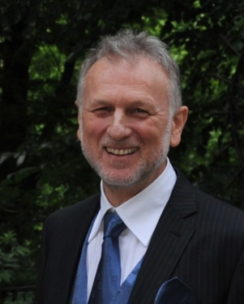

Chi Sono
Chirurgo Plastico con oltre 30 anni di esperienza
Competenze Professionali
- ✓ Ottima padronanza della chirurgia plastica ed estetica del volto e della mammella
- ✓ Esperto nella chirurgia dei tumori cutanei e nella tecnica del linfonodo sentinella
- ✓ Specialista nella chirurgia riparativa e ricostruttiva del tronco
- ✓ Competenza nella chirurgia estetica e funzionale della parete addominale
Competenze Linguistiche
Inglese
Parlato: Fluente
Scritto: Fluente
Francese
Parlato: Fluente
Scritto: Scolastico
Spagnolo
Parlato: Fluente
Scritto: Fluente
Formazione e Aggiornamento
- • Laurea in Medicina e Chirurgia
- • Specializzazione in Chirurgia Toracica
- • Specializzazione in Chirurgia Generale, con tesi sulle "plastiche riparative per tumori cutanei del volto"
Tecnologie e Competenze Specifiche
- • Notevole esperienza nell'uso dei fillers e dei fili di sostegno cutaneo
- • Esperienza nell'uso del laser Neodimio-Yag e della luce pulsata
- • Competenze informatiche di base per l'uso quotidiano dei supporti informatici
Pubblicazioni e Collaborazioni
Autore di varie pubblicazioni scientifiche e di circa 60-70 articoli di Medicina e Chirurgia Estetica per la Rivista Obiettivo Benessere.